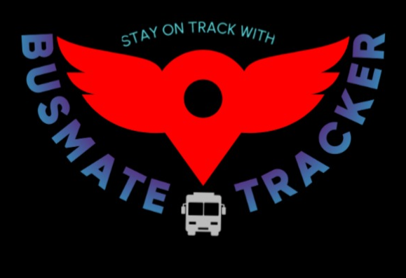

 BusMate-Tracker
Home
About
Login/SignUp
BusMate Tracker - Stay on Track
(About)
Introducing BusMate Tracker: Revolutionizing Public Transportation in Himachal Pradesh
In our fast-paced world, reliable and efficient public transportation is essential for the convenience and well-being of communities. That's where BusMate Tracker steps in to transform the way you experience public transportation in India/Himachal Pradesh.
Solving the Transportation Puzzle
Our mission at BusMate Tracker is to develop a smart transportation system that addresses the common problems faced by commuters and enhances the efficiency of public transportation. We understand the frustrations of waiting at a bus stop, uncertain about when your bus will arrive. With BusMate Tracker, those uncertainties are a thing of the past.
Real-time Information at Your Fingertips
Imagine having real-time information about the availability of buses and their upcoming arrival times right at your fingertips. That's precisely what our system provides. We leverage cutting-edge technologies such as GPS and integrate data from various sources, including buses and traffic management systems, to offer you accurate and up-to-date information.
Know Your Bus's Whereabouts
With BusMate Tracker, you can easily identify the current location of your desired bus. Whether you're planning your daily commute or an occasional trip, our system ensures you have the information you need to make informed decisions. No more guessing when your bus will arrive – we've got you covered.
Emission Compliance and Sustainability
At BusMate Tracker, we also care deeply about the environment and sustainability. We provide valuable information about the buses you'll be boarding, including their emission compliance, such as Bharat Stage IV, and their use of clean fuels like CNG or electricity. This not only helps you make eco-friendly choices but also contributes to a greener future.
Enhancing Himachal Pradesh's Public Transportation
Our smart transportation system is not just a convenience; it's a game-changer for public transportation in Himachal Pradesh. By seamlessly integrating real-time data and sustainability information, BusMate Tracker significantly enhances the efficiency and convenience of your daily commute. Join us in redefining the way you experience public transportation. With BusMate Tracker, you're not just catching a bus; you're embarking on a journey of reliability, convenience, and sustainability. Say goodbye to uncertainty and hello to a brighter, more efficient future of transportation in Himachal Pradesh. Ride with confidence ride with BusMate Tracker.
@BusMate Tracker by V-Company